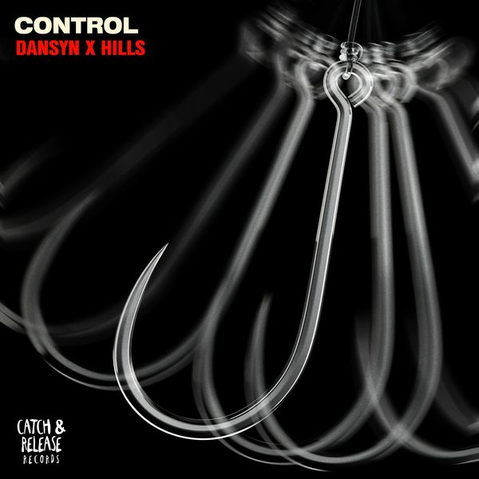

I 18 dischi e le top 6
 1
Ain't No SunshineSimioli, Provenzano, Scarlet, Roberto Tropea
1
Ain't No SunshineSimioli, Provenzano, Scarlet, Roberto Tropea
 2
Hello AfricaDean Mickoski, Dr Alban
2
Hello AfricaDean Mickoski, Dr Alban
 3
Tequila y LimonKalma, JOHN ELLE, Elilluminari, Rubens Vibes
3
Tequila y LimonKalma, JOHN ELLE, Elilluminari, Rubens Vibes
 4
Mi BombaRaffa FL, Arianna Triassi
4
Mi BombaRaffa FL, Arianna Triassi
 5
Got To MoveDanny Rhys, Loz Seka
5
Got To MoveDanny Rhys, Loz Seka
 6
Cola (ARTBAT Remix)CamelPhat, Elderbrook, ARTBAT
6
Cola (ARTBAT Remix)CamelPhat, Elderbrook, ARTBAT
 7
Suave SuaveHaskell
7
Suave SuaveHaskell
 8
Liquid MusicFedde Le Grand
8
Liquid MusicFedde Le Grand
 9
Adagio For StringsDesyfer
9
Adagio For StringsDesyfer
 10
Calm DownMELDAY, MYKEL COSTA
10
Calm DownMELDAY, MYKEL COSTA
 11
Uh Vei VeiDave Toretto
11
Uh Vei VeiDave Toretto
 12
Push The Feeling OnLucas & Steve
12
Push The Feeling OnLucas & Steve
 13
CTRLChocolate Puma
14
ProblemsGene Farris, Illyus Barrientos
13
CTRLChocolate Puma
14
ProblemsGene Farris, Illyus Barrientos

15 ControlHILLS (US), Dansyn 16
Things I Haven’t Told YouDavid Guetta, Audio Bullys, DJs From Mars
16
Things I Haven’t Told YouDavid Guetta, Audio Bullys, DJs From Mars
 17
TESLAMau P
17
TESLAMau P
 18
Waterfalls ft. Sam Harper & Bobby HarveyJames Hype
18
Waterfalls ft. Sam Harper & Bobby HarveyJames Hype
La tracklist
- 1 Ain't No Sunshine Simioli, Provenzano, Scarlet, Roberto Tropea Ego
- 2 Hello Africa Dean Mickoski, Dr Alban Go Play Records
- 3 Tequila y Limon Kalma, JOHN ELLE, Elilluminari, Rubens Vibes Club Bad Records
- 4 Mi Bomba Raffa FL, Arianna Triassi Ultra Records
- 5 Got To Move Danny Rhys, Loz Seka Toolroom Records
- 6 Cola (ARTBAT Remix) CamelPhat, Elderbrook, ARTBAT Defected Records
- 7 Suave Suave Haskell Alleanza
- 8 Liquid Music Fedde Le Grand Toolroom Records
- 9 Adagio For Strings Desyfer Tactal Hots Music
- 10 Calm Down MELDAY, MYKEL COSTA LIVANA MUSIC
- 11 Uh Vei Vei Dave Toretto Hysteria Records
- 12 Push The Feeling On Lucas & Steve Musical Freedom
- 13 CTRL Chocolate Puma Armada Music
- 14 Problems Gene Farris, Illyus Barrientos Toolroom Records
- 15 Control HILLS (US), Dansyn Catch & Release
- 16 Things I Haven’t Told You David Guetta, Audio Bullys, DJs From Mars Spinnin' Records
- 17 TESLA Mau P Insomniac Records
- 18 Waterfalls ft. Sam Harper & Bobby Harvey James Hype Universal-Island Records